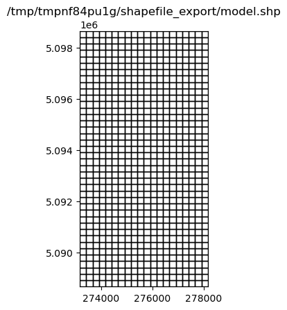
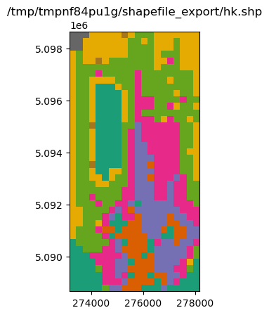
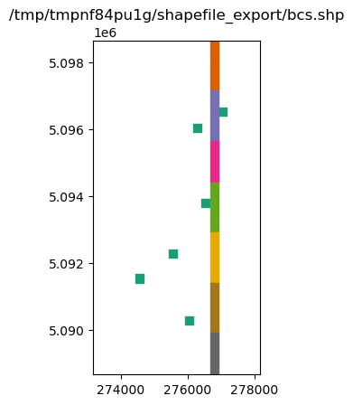
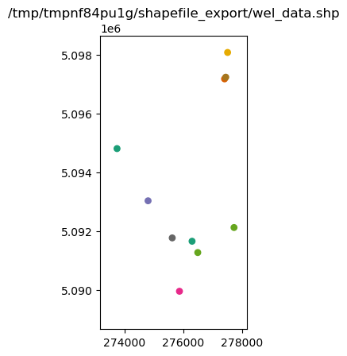
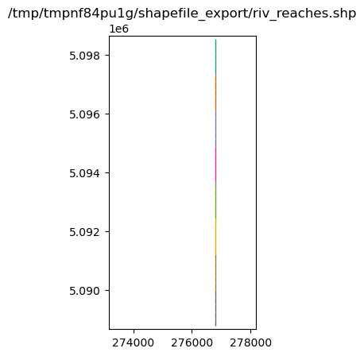

Note
Shapefile export demo
The goal of this notebook is to demonstrate ways to export model information to shapefiles. This example will cover: * basic exporting of information for a model, individual package, or dataset * custom exporting of combined data from different packages * general exporting and importing of geographic data from other sources
[1]:
import sys
import os
from tempfile import TemporaryDirectory
import numpy as np
import matplotlib as mpl
import matplotlib.pyplot as plt
import pandas as pd
# run installed version of flopy or add local path
try:
import flopy
except:
fpth = os.path.abspath(os.path.join("..", ".."))
sys.path.append(fpth)
import flopy
print(sys.version)
print("numpy version: {}".format(np.__version__))
print("matplotlib version: {}".format(mpl.__version__))
print("flopy version: {}".format(flopy.__version__))
3.10.10 | packaged by conda-forge | (main, Mar 24 2023, 20:08:06) [GCC 11.3.0]
numpy version: 1.24.3
matplotlib version: 3.7.1
flopy version: 3.3.7
[2]:
# temporary directory
temp_dir = TemporaryDirectory()
outdir = os.path.join(temp_dir.name, "shapefile_export")
# load an existing model
model_ws = "../../examples/data/freyberg"
m = flopy.modflow.Modflow.load(
"freyberg.nam",
model_ws=model_ws,
verbose=False,
check=False,
exe_name="mfnwt",
)
[3]:
m.get_package_list()
[3]:
['DIS', 'BAS6', 'LPF', 'WEL', 'RIV', 'RCH', 'OC', 'PCG']
set the model coordinate information
the coordinate information where the grid is located in a projected coordinate system (e.g. UTM)
[4]:
grid = m.modelgrid
grid.set_coord_info(xoff=273170, yoff=5088657, epsg=26916)
/home/runner/work/flopy/flopy/flopy/utils/crs.py:119: PendingDeprecationWarning: the epsg argument will be deprecated and will be removed in version 3.4. Use crs instead.
warnings.warn(
[5]:
grid.extent
[5]:
(273170.0, 278170.0, 5088657.0, 5098657.0)
Declarative export using attached .export() methods
Export the whole model to a single shapefile
[6]:
fname = "{}/model.shp".format(outdir)
m.export(fname)
[7]:
ax = plt.subplot(1, 1, 1, aspect="equal")
extents = grid.extent
pc = flopy.plot.plot_shapefile(fname, ax=ax, edgecolor="k", facecolor="none")
ax.set_xlim(extents[0], extents[1])
ax.set_ylim(extents[2], extents[3])
ax.set_title(fname);

[8]:
fname = "{}/wel.shp".format(outdir)
m.wel.export(fname)
Export a package to a shapefile
Export a FloPy list or array object
[9]:
m.lpf.hk
[9]:
<flopy.utils.util_array.Util3d at 0x7f84729c12a0>
[10]:
fname = "{}/hk.shp".format(outdir)
m.lpf.hk.export("{}/hk.shp".format(outdir))
[11]:
ax = plt.subplot(1, 1, 1, aspect="equal")
extents = grid.extent
a = m.lpf.hk.array.ravel()
pc = flopy.plot.plot_shapefile(fname, ax=ax, a=a)
ax.set_xlim(extents[0], extents[1])
ax.set_ylim(extents[2], extents[3])
ax.set_title(fname);

[12]:
m.riv.stress_period_data
[12]:
<flopy.utils.util_list.MfList at 0x7f84729c1720>
[13]:
m.riv.stress_period_data.export("{}/riv_spd.shp".format(outdir))
MfList.export() exports the whole grid by default, regardless of the locations of the boundary cells
sparse=True only exports the boundary cells in the MfList
[14]:
m.riv.stress_period_data.export("{}/riv_spd.shp".format(outdir), sparse=True)
wrote ../../../../home/runner/work/flopy/flopy/.docs/Notebooks
[15]:
m.wel.stress_period_data.export("{}/wel_spd.shp".format(outdir), sparse=True)
wrote ../../../../home/runner/work/flopy/flopy/.docs/Notebooks
Ad-hoc exporting using recarray2shp
The main idea is to create a recarray with all of the attribute information, and a list of geometry features (one feature per row in the recarray)
each geometry feature is an instance of the
Point,LineStringorPolygonclasses inflopy.utils.geometry. The shapefile format requires all the features to be of the same type.We will use pandas dataframes for these examples because they are easy to work with, and then convert them to recarrays prior to exporting.
[16]:
from flopy.export.shapefile_utils import recarray2shp
combining data from different packages
write a shapefile of RIV and WEL package cells
[17]:
wellspd = pd.DataFrame(m.wel.stress_period_data[0])
rivspd = pd.DataFrame(m.riv.stress_period_data[0])
spd = pd.concat([wellspd, rivspd])
spd.head()
[17]:
| k | i | j | flux | iface | stage | cond | rbot | |
|---|---|---|---|---|---|---|---|---|
| 0 | 0 | 8 | 15 | -0.00820 | 0.0 | NaN | NaN | NaN |
| 1 | 0 | 10 | 12 | -0.00410 | 0.0 | NaN | NaN | NaN |
| 2 | 0 | 19 | 13 | -0.00390 | 0.0 | NaN | NaN | NaN |
| 3 | 0 | 25 | 9 | -0.00083 | 0.0 | NaN | NaN | NaN |
| 4 | 0 | 28 | 5 | -0.00072 | 0.0 | NaN | NaN | NaN |
[18]:
from flopy.utils.geometry import Polygon
vertices = []
for row, col in zip(spd.i, spd.j):
vertices.append(grid.get_cell_vertices(row, col))
polygons = [Polygon(vrt) for vrt in vertices]
polygons
[18]:
[<flopy.utils.geometry.Polygon at 0x7f8471bc3100>,
<flopy.utils.geometry.Polygon at 0x7f8471bf9060>,
<flopy.utils.geometry.Polygon at 0x7f8471bf8fd0>,
<flopy.utils.geometry.Polygon at 0x7f8471bf93c0>,
<flopy.utils.geometry.Polygon at 0x7f8471bf9450>,
<flopy.utils.geometry.Polygon at 0x7f8471bf8c70>,
<flopy.utils.geometry.Polygon at 0x7f8471bf8be0>,
<flopy.utils.geometry.Polygon at 0x7f8471bf8b50>,
<flopy.utils.geometry.Polygon at 0x7f8471bf8ac0>,
<flopy.utils.geometry.Polygon at 0x7f8471bf8910>,
<flopy.utils.geometry.Polygon at 0x7f8471bf8850>,
<flopy.utils.geometry.Polygon at 0x7f8471bf8730>,
<flopy.utils.geometry.Polygon at 0x7f8471bf9330>,
<flopy.utils.geometry.Polygon at 0x7f8471bf92a0>,
<flopy.utils.geometry.Polygon at 0x7f8471bf8760>,
<flopy.utils.geometry.Polygon at 0x7f8471bf8610>,
<flopy.utils.geometry.Polygon at 0x7f8471bf8e80>,
<flopy.utils.geometry.Polygon at 0x7f8471bf94b0>,
<flopy.utils.geometry.Polygon at 0x7f8471bf9540>,
<flopy.utils.geometry.Polygon at 0x7f8471bf95d0>,
<flopy.utils.geometry.Polygon at 0x7f8471bf9660>,
<flopy.utils.geometry.Polygon at 0x7f8471bf96f0>,
<flopy.utils.geometry.Polygon at 0x7f8471bf9780>,
<flopy.utils.geometry.Polygon at 0x7f8471bf9810>,
<flopy.utils.geometry.Polygon at 0x7f8471bf98a0>,
<flopy.utils.geometry.Polygon at 0x7f8471bf9930>,
<flopy.utils.geometry.Polygon at 0x7f8471bf99c0>,
<flopy.utils.geometry.Polygon at 0x7f8471bf9a50>,
<flopy.utils.geometry.Polygon at 0x7f8471bf9ae0>,
<flopy.utils.geometry.Polygon at 0x7f8471bf9b70>,
<flopy.utils.geometry.Polygon at 0x7f8471bf8130>,
<flopy.utils.geometry.Polygon at 0x7f8471bf84f0>,
<flopy.utils.geometry.Polygon at 0x7f8471bf8190>,
<flopy.utils.geometry.Polygon at 0x7f8471bf82b0>,
<flopy.utils.geometry.Polygon at 0x7f8471bf8580>,
<flopy.utils.geometry.Polygon at 0x7f8471bf8340>,
<flopy.utils.geometry.Polygon at 0x7f8471bf83d0>,
<flopy.utils.geometry.Polygon at 0x7f8471bf85b0>,
<flopy.utils.geometry.Polygon at 0x7f8471bf9cc0>,
<flopy.utils.geometry.Polygon at 0x7f8471bf9d20>,
<flopy.utils.geometry.Polygon at 0x7f8471bf9db0>,
<flopy.utils.geometry.Polygon at 0x7f8471bf9e40>,
<flopy.utils.geometry.Polygon at 0x7f8471bf9ed0>,
<flopy.utils.geometry.Polygon at 0x7f8471bf9f60>,
<flopy.utils.geometry.Polygon at 0x7f8471bf9ff0>,
<flopy.utils.geometry.Polygon at 0x7f8471bfa080>]
[19]:
fname = "{}/bcs.shp".format(outdir)
recarray2shp(spd.to_records(), geoms=polygons, shpname=fname, epsg=grid.epsg)
wrote ../../../../home/runner/work/flopy/flopy/.docs/Notebooks
/home/runner/work/flopy/flopy/flopy/utils/crs.py:119: PendingDeprecationWarning: the epsg argument will be deprecated and will be removed in version 3.4. Use crs instead.
warnings.warn(
[20]:
ax = plt.subplot(1, 1, 1, aspect="equal")
extents = grid.extent
pc = flopy.plot.plot_shapefile(fname, ax=ax)
ax.set_xlim(extents[0], extents[1])
ax.set_ylim(extents[2], extents[3])
ax.set_title(fname);

exporting other data
Suppose we have some well data with actual locations that we want to export to a shapefile
[21]:
welldata = pd.DataFrame(
{
"wellID": np.arange(0, 10),
"q": np.random.randn(10) * 100 - 1000,
"x_utm": np.random.rand(10) * 5000 + grid.xoffset,
"y_utm": grid.yoffset + np.random.rand(10) * 10000,
}
)
welldata.head()
[21]:
| wellID | q | x_utm | y_utm | |
|---|---|---|---|---|
| 0 | 0 | -1187.967441 | 273737.540248 | 5.094806e+06 |
| 1 | 1 | -1033.283046 | 276294.275388 | 5.091652e+06 |
| 2 | 2 | -1094.002541 | 277401.847540 | 5.097180e+06 |
| 3 | 3 | -954.962892 | 274795.201764 | 5.093030e+06 |
| 4 | 4 | -1141.876152 | 275864.648431 | 5.089949e+06 |
[22]:
from flopy.utils.geometry import Point
geoms = [Point(x, y) for x, y in zip(welldata.x_utm, welldata.y_utm)]
fname = "{}/wel_data.shp".format(outdir)
recarray2shp(welldata.to_records(), geoms=geoms, shpname=fname, epsg=grid.epsg)
wrote ../../../../home/runner/work/flopy/flopy/.docs/Notebooks
/home/runner/work/flopy/flopy/flopy/utils/crs.py:119: PendingDeprecationWarning: the epsg argument will be deprecated and will be removed in version 3.4. Use crs instead.
warnings.warn(
[23]:
ax = plt.subplot(1, 1, 1, aspect="equal")
extents = grid.extent
pc = flopy.plot.plot_shapefile(fname, ax=ax, radius=100)
ax.set_xlim(extents[0], extents[1])
ax.set_ylim(extents[2], extents[3])
ax.set_title(fname);

Adding attribute data to an existing shapefile
Suppose we have a GIS coverage representing the river in the riv package
[24]:
from flopy.utils.geometry import LineString
### make up a linestring shapefile of the river reaches
i, j = m.riv.stress_period_data[0].i, m.riv.stress_period_data[0].j
x0 = grid.xyzcellcenters[0][i[0], j[0]]
x1 = grid.xyzcellcenters[0][i[-1], j[-1]]
y0 = grid.xyzcellcenters[1][i[0], j[0]]
y1 = grid.xyzcellcenters[1][i[-1], j[-1]]
x = np.linspace(x0, x1, m.nrow + 1)
y = np.linspace(y0, y1, m.nrow + 1)
l0 = zip(list(zip(x[:-1], y[:-1])), list(zip(x[1:], y[1:])))
lines = [LineString(l) for l in l0]
rivdata = pd.DataFrame(m.riv.stress_period_data[0])
rivdata["reach"] = np.arange(len(lines))
lines_shapefile = "{}/riv_reaches.shp".format(outdir)
recarray2shp(
rivdata.to_records(index=False),
geoms=lines,
shpname=lines_shapefile,
epsg=grid.epsg,
)
wrote ../../../../home/runner/work/flopy/flopy/.docs/Notebooks
/home/runner/work/flopy/flopy/flopy/utils/crs.py:119: PendingDeprecationWarning: the epsg argument will be deprecated and will be removed in version 3.4. Use crs instead.
warnings.warn(
[25]:
ax = plt.subplot(1, 1, 1, aspect="equal")
extents = grid.extent
pc = flopy.plot.plot_shapefile(lines_shapefile, ax=ax, radius=25)
ax.set_xlim(extents[0], extents[1])
ax.set_ylim(extents[2], extents[3])
ax.set_title(lines_shapefile);

shp2recarray reads a shapefile into a numpy record array, which can easily be converted to a DataFrame
[26]:
from flopy.export.shapefile_utils import shp2recarray
[27]:
linesdata = shp2recarray(lines_shapefile)
linesdata = pd.DataFrame(linesdata)
linesdata.head()
[27]:
| k | i | j | stage | cond | rbot | iface | reach | geometry | |
|---|---|---|---|---|---|---|---|---|---|
| 0 | 0 | 0 | 14 | 20.100000 | 0.05 | 20.00 | 0.0 | 0 | <flopy.utils.geometry.LineString object at 0x7... |
| 1 | 0 | 1 | 14 | 19.870001 | 0.05 | 19.75 | 0.0 | 1 | <flopy.utils.geometry.LineString object at 0x7... |
| 2 | 0 | 2 | 14 | 19.650000 | 0.05 | 19.50 | 0.0 | 2 | <flopy.utils.geometry.LineString object at 0x7... |
| 3 | 0 | 3 | 14 | 19.420000 | 0.05 | 19.25 | 0.0 | 3 | <flopy.utils.geometry.LineString object at 0x7... |
| 4 | 0 | 4 | 14 | 19.190001 | 0.05 | 19.00 | 0.0 | 4 | <flopy.utils.geometry.LineString object at 0x7... |
[28]:
# make up some fluxes between the river and aquifer at each reach
q = np.random.randn(len(linesdata)) + 1
q
[28]:
array([-0.76982386, -0.09667859, 0.3831959 , 1.95771472, -0.76248695,
-0.43824965, 2.15240707, -0.77795525, 2.82654391, 0.52932738,
-0.14287466, 0.64522851, 0.80885535, 1.17384148, 1.01363603,
-0.78231752, 0.62680756, 2.75642212, 1.49939062, 0.64357479,
1.88814639, 1.38326048, 0.56916317, 1.60702053, 0.37351529,
1.39181892, 1.83675001, 1.27800476, 2.32832031, 1.86913713,
-0.17747004, -0.40480653, 0.81704412, 0.43951463, 0.09449786,
-0.21937908, -0.16301987, 1.97026525, 2.25439335, -0.52436219])
[29]:
linesdata["qreach"] = q
linesdata["qstream"] = np.cumsum(q)
[30]:
recarray2shp(
linesdata.drop("geometry", axis=1).to_records(),
geoms=linesdata.geometry.values,
shpname=lines_shapefile,
epsg=grid.epsg,
)
wrote ../../../../home/runner/work/flopy/flopy/.docs/Notebooks
/home/runner/work/flopy/flopy/flopy/utils/crs.py:119: PendingDeprecationWarning: the epsg argument will be deprecated and will be removed in version 3.4. Use crs instead.
warnings.warn(
[31]:
ax = plt.subplot(1, 1, 1, aspect="equal")
extents = grid.extent
pc = flopy.plot.plot_shapefile(lines_shapefile, ax=ax, radius=25)
ax.set_xlim(extents[0], extents[1])
ax.set_ylim(extents[2], extents[3])
ax.set_title(lines_shapefile);

Overriding the model’s modelgrid with a user supplied modelgrid
In some cases it may be necessary to override the model’s modelgrid instance with a seperate modelgrid. An example of this is if the model discretization is in feet and the user would like it projected in meters. Exporting can be accomplished by supplying a modelgrid as a kwarg in any of the export() methods within flopy. Below is an example:
[32]:
mg0 = m.modelgrid
# build a new modelgrid instance with discretization in meters
modelgrid = flopy.discretization.StructuredGrid(
delc=mg0.delc * 0.3048,
delr=mg0.delr * 0.3048,
top=mg0.top,
botm=mg0.botm,
idomain=mg0.idomain,
xoff=mg0.xoffset * 0.3048,
yoff=mg0.yoffset * 0.3048,
)
# exporting an entire model
m.export("{}/freyberg.shp".format(outdir), modelgrid=modelgrid)
No CRS information for writing a .prj file.
Supply an valid coordinate system reference to the attached modelgrid object or .export() method.
No CRS information for writing a .prj file.
Supply an valid coordinate system reference to the attached modelgrid object or .export() method.
And for a specific parameter the method is the same
[33]:
fname = "{}/hk.shp".format(outdir)
m.lpf.hk.export(fname, modelgrid=modelgrid)
No CRS information for writing a .prj file.
Supply an valid coordinate system reference to the attached modelgrid object or .export() method.
[34]:
ax = plt.subplot(1, 1, 1, aspect="equal")
extents = modelgrid.extent
a = m.lpf.hk.array.ravel()
pc = flopy.plot.plot_shapefile(fname, ax=ax, a=a)
ax.set_xlim(extents[0], extents[1])
ax.set_ylim(extents[2], extents[3])
ax.set_title(fname);

[35]:
try:
# ignore PermissionError on Windows
temp_dir.cleanup()
except:
pass